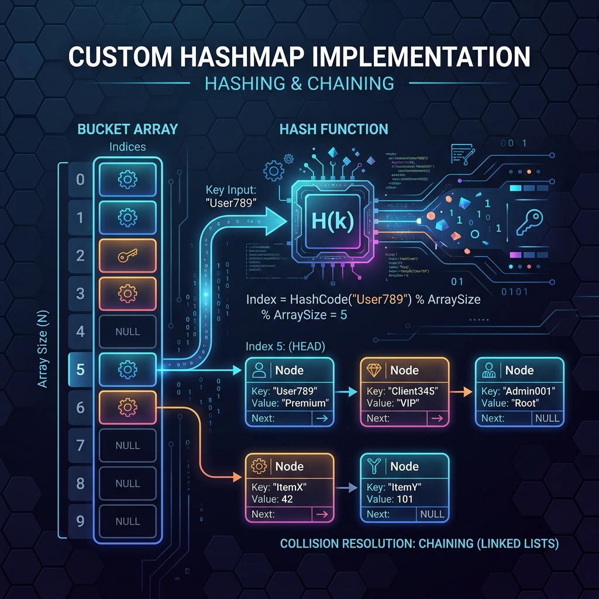

In Java development, HashMap is one of the most frequently used data structures. It provides near-instantaneous O(1) time complexity for both retrieving and storing key-value pairs. But how does it actually manage memory and search operations under the hood? To demystify this, we will build a custom, bare-bones implementation of a HashMap from scratch. We will explore how it uses hashing algorithms, handles collisions, and dynamically grows as you add more data.

Think of a HashMap like a post office sorting room with exactly 16 mailboxes, which we call buckets. When mail arrives, the clerk must sort it using the recipient's name (the key):
- Hashing (Choosing the Box): Instead of checking boxes randomly, the clerk runs the recipient's name through a quick rule—for example, taking the length of the name modulo 16—to get a box number. The letter always goes into that specific box.
- Handling Collisions (Separate Chaining): With thousands of possible names and only 16 boxes, some names will inevitably map to the same box. If "Alice" and "Alex" both hash to box 5, the clerk clips their letters together in a chain inside box 5. This method is called Separate Chaining.
- Resizing (Rehashing): As more letters accumulate, these paperclipped chains grow longer. Eventually, finding a specific letter requires sorting through a long chain, which slows down operations. To fix this, the post office doubles the number of mailboxes to 32, recalculates the mailbox number for every recipient, and redistributes all the letters.
Core Technical Concepts
1. The Bucket Array and Nodes
Our custom implementation relies on several key components. First, we store our data in an array of Node elements. Each Node represents a key-value entry and contains a reference to the next node in the chain, forming a singly linked list for handling collisions.
static class Node<K, V> {
final K key;
V value;
Node<K, V> next;
// Constructor...
}2. Calculating the Bucket Index (Hash Function)
When a key is inserted, we determine its bucket index by calculating the absolute value of its hash code modulo the current array capacity. Null keys are always routed to index 0:
private int hash(K key) {
if (key == null) return 0;
return Math.abs(key.hashCode() % capacity);
}3. Putting Elements (Inserting/Updating)
When saving a key-value pair, we hash the key to find the bucket. If the bucket is empty, we place the node there. If a collision occurs, we traverse the list: if we find the same key (comparing with equals()), we update the value; otherwise, we append the new node to the end of the chain.
4. Getting Elements (Retrieval)
To retrieve a value, we hash the key to locate the bucket and traverse its linked list, returning the value if we find a matching key, or null if the key doesn't exist.
5. Resizing and Rehashing
When the number of elements exceeds our load factor threshold (typically 75% of the array size), we double the capacity and rehash all existing entries into the new array.
Complete Source Code
Here is the complete Java source code for our CustomHashMap. It includes standard put, get, remove, and resize operations, along with a main class to demonstrate the map in action.
package io.practise.map;
public class CustomHashMap<K, V> {
static class Node<K, V> {
final K key;
V value;
Node<K, V> next;
public Node(K key, V value, Node<K, V> next) {
this.key = key;
this.value = value;
this.next = next;
}
}
private Node<K, V>[] table;
private int capacity;
private final float loadFactor = 0.75f;
private int size;
@SuppressWarnings("unchecked")
public CustomHashMap(int initialCapacity) {
this.capacity = initialCapacity;
this.table = (Node<K, V>[]) new Node[capacity];
this.size = 0;
}
private int hash(K key) {
if (key == null) return 0;
return Math.abs(key.hashCode() % capacity);
}
public V put(K key, V value) {
if ((float) (size + 1) / capacity > loadFactor) {
resize();
}
int index = hash(key);
Node<K, V> head = table[index];
if (head == null) {
table[index] = new Node<>(key, value, null);
size++;
return null;
}
Node<K, V> curr = head;
while (curr != null) {
if (isKeyEqual(curr.key, key)) {
V oldValue = curr.value;
curr.value = value;
return oldValue;
}
if (curr.next == null) break;
curr = curr.next;
}
curr.next = new Node<>(key, value, null);
size++;
return null;
}
public V get(K key) {
int index = hash(key);
Node<K, V> curr = table[index];
while (curr != null) {
if (isKeyEqual(curr.key, key)) return curr.value;
curr = curr.next;
}
return null;
}
public V remove(K key) {
int index = hash(key);
Node<K, V> curr = table[index];
Node<K, V> prev = null;
while (curr != null) {
if (isKeyEqual(curr.key, key)) {
V value = curr.value;
if (prev == null) {
table[index] = curr.next;
} else {
prev.next = curr.next;
}
size--;
return value;
}
prev = curr;
curr = curr.next;
}
return null;
}
@SuppressWarnings("unchecked")
private void resize() {
int oldCapacity = capacity;
Node<K, V>[] oldTable = table;
capacity = oldCapacity * 2;
table = (Node<K, V>[]) new Node[capacity];
size = 0;
for (int i = 0; i < oldCapacity; i++) {
Node<K, V> curr = oldTable[i];
while (curr != null) {
put(curr.key, curr.value);
curr = curr.next;
}
}
}
private boolean isKeyEqual(K k1, K k2) {
if (k1 == null) return k2 == null;
return k1.equals(k2);
}
}Conclusion & Complexity Analysis
Building a custom HashMap illustrates how arrays and linked lists combine to create a highly efficient hash table. By using hash codes to index directly into memory, we achieve constant-time lookup performance O(1), while chained linked lists handle collisions dynamically.